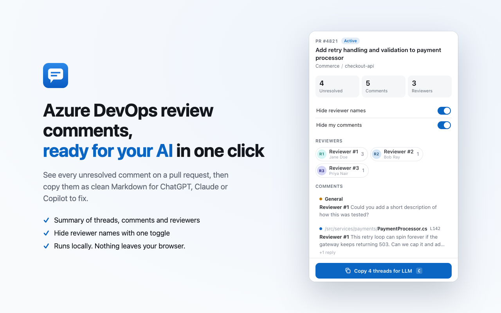

Copy Azure DevOps PR comments for your AI
A Chrome and Edge extension that copies the unresolved review comments on an Azure DevOps pull request as clean Markdown, ready for ChatGPT, Claude or Copilot to fix.
- Summary of unresolved threads, comments and reviewers
- Hide reviewer names and your own replies with one toggle
- Runs entirely in your browser. Nothing is sent anywhere.
